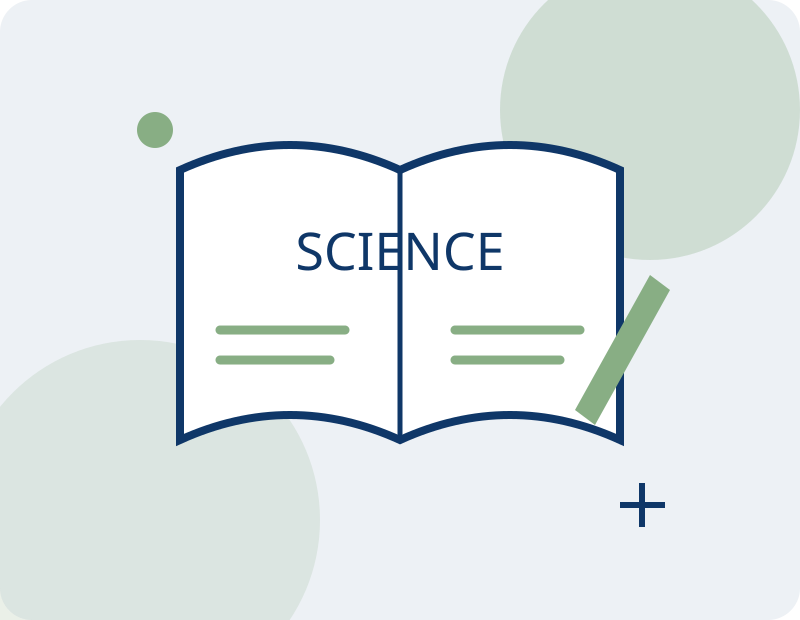

Sciences expérimentales科学实践课Practical science
Observer, questionner, expérimenter.观察、提问，在实践中探索科学。Observe, question and explore.
Relier les connaissances scientifiques à une démarche d’observation, d’expérimentation et d’analyse.把科学知识与观察、实验和分析联系起来，培养探索问题的思维方式。Connect scientific knowledge with observation, experimentation and analysis.
Se renseigner / s’inscrire课程咨询与报名Enquire / register
Pistes d’apprentissage学习方向Learning areas
Expérimenter et recueillir des données实践与记录数据Experiment and record data
Analyser et partager ses conclusions分析与交流发现Analyse and share findings
À qui s’adresse ce cours ?适合哪些学习者？Who is this course for?
Pour les élèves du collège et du lycée. Les thèmes et modalités des activités sont à confirmer avec l’association.面向初中、高中学生。具体活动主题、实验内容与组织方式请联系协会确认。For secondary school students. Confirm activity themes and arrangements with the association.
Construisons votre parcours ensemble一起选择适合的学习安排Plan your learning with us
Pour les horaires, les tarifs, le lieu et les places disponibles, contactez l’association.上课时间、费用、地点与名额请联系协会确认。Contact the association to confirm schedules, fees, location and availability.
WeChat : Beyonce5819
clubbilingueps@gmail.com